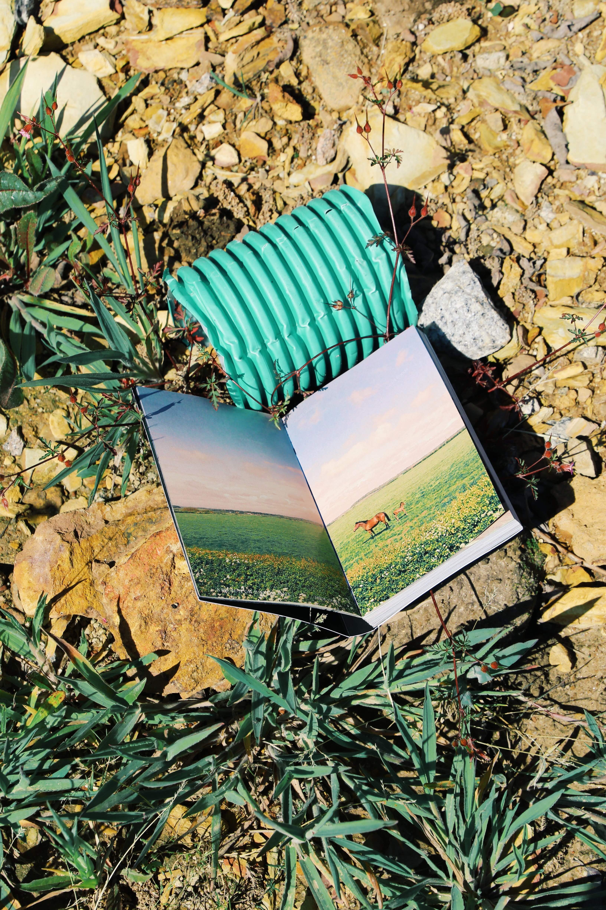

Graphic Design as a subject, a method and a practice — A resource book on Graphic Design

751 dias – O tempo não consome a Eternidade
Developed in ESDA—IDEA WITH Inês Nepomuceno

A Project one Surveillance — protection, privacy and fear
What do you do, when you are not being watched?

Sociedade Alternativa — Nós escapamos
A book by Catarina Freitas

Catcher in the rye + The revolution of everyday life
Book Redesign

The palace of dreams
Publication by Catarina Freitas
SINAL – 100 Anos de Design das Telecomunicações e dos Correios em Portugal — catalogue
Sociedade Alternativa — Nós escapamos
A book by Catarina Freitas